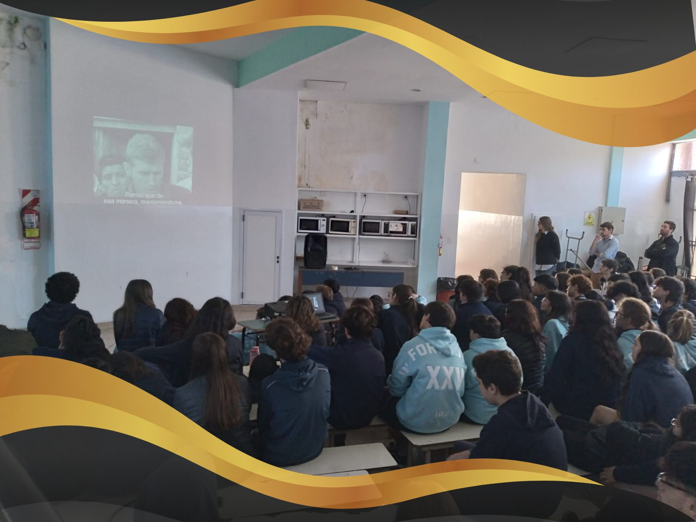

Proyección de documental “Padre Mugica”, con la visita de uno de sus directores: Gabriel Mariotto
Por Mauricio Criollo Curso 4to A
El 29 de Abril de este año, los alumnos de los 4tos y 5tos años del Espíritu Santo tuvieron
un evento especial en el que el director del documental “El Padre Mugica”, Gabriel Mariotto,
fue a la institución a dar una charla introductoria sobre el documental, acerca de quién fue y
qué hizo, para luego ver el documental bajo el mismo nombre.
Este documental retrató e inmortalizó la figura del Padre Mugica, realizando un recorrido de
su vida: desde su nacimiento y sus orígenes, atravesando su adolescencia, juventud y
luego adultez, las cuales siempre se vieron inmersas por la religión y su disposición a
colaborar y ayudar a los demás.
El transcurso del documental puede afirmar que el Padre siempre apelaba por el bien de
los demás: todo su recorrido fue realizado por la búsqueda del entendimiento a las clases
inferiores, no desde el prejuicio, sino desde la comprensión y la ayuda al prójimo.